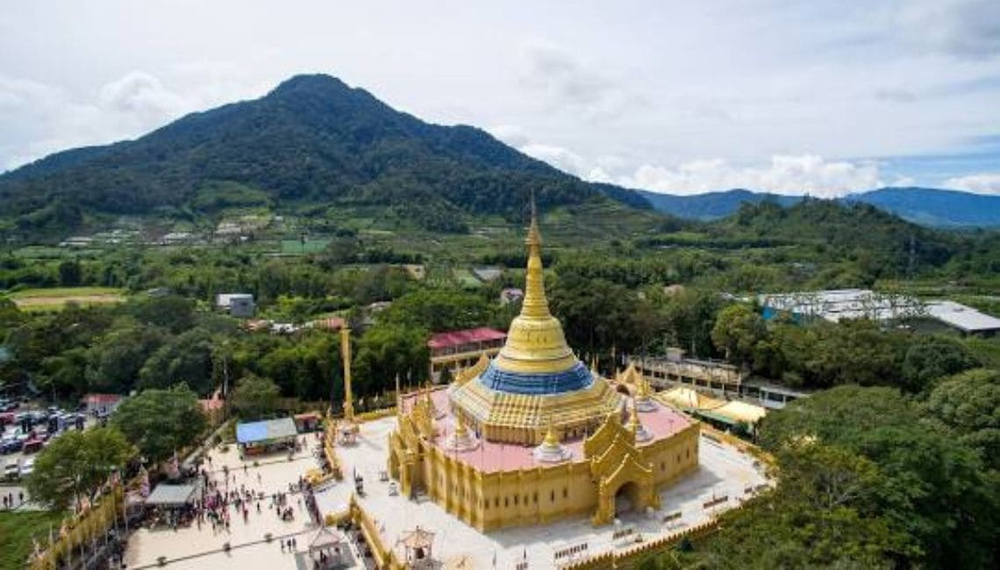
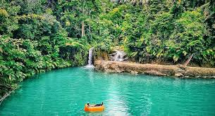

Danau Toba

Danau vulkanik terbesar di dunia dan salah satu ikon pariwisata Sumatra Utara. Nikmati pemandangan indah, udara segar, dan kunjungi Pulau Samosir di tengahnya. Danau ini terbentuk dari letusan gunung berapi purba dan menjadi kaldera terbesar di dunia. Kedalamannya mencapai sekitar 500 meter.
Baca Selengkapnya
Pulau Samosir

Pulau vulkanik di tengah Danau Toba yang kaya akan budaya Batak. Kunjungi Tomok, Tuktuk, dan makam Raja Sidabutar. Pulau ini adalah rumah bagi banyak desa tradisional Batak, menawarkan pengalaman budaya yang mendalam dengan rumah adat dan pertunjukan tari Tortor.
Baca Selengkapnya
Air Terjun Sipiso-piso

Air terjun tertinggi di Indonesia dengan ketinggian sekitar 120 meter. Pemandangan tebing dan lembah yang menakjubkan. Terletak di dekat Danau Toba, air terjun ini menyajikan pemandangan spektakuler yang mengalir dari gua bawah tanah.
Baca Selengkapnya
Taman Nasional Gunung Leuser

Salah satu kawasan hutan hujan tropis terbesar di dunia yang menjadi habitat orangutan Sumatra, harimau Sumatra, dan badak Sumatra. Destinasi ini cocok untuk ekowisata dan penelitian satwa liar, terutama untuk melihat orangutan di Bukit Lawang.
Baca Selengkapnya
Berastagi

Kota dataran tinggi dengan udara sejuk, kebun bunga, dan pasar buah serta sayur yang ramai. Berastagi juga merupakan pintu gerbang untuk mendaki Gunung Sibayak dan Gunung Sinabung, serta mengunjungi Bukit Gundaling untuk pemandangan indah.
Baca Selengkapnya
Danau Linting

Danau unik dengan air belerang hangat yang berwarna hijau kebiruan. Dipercaya memiliki khasiat terapeutik. Danau ini menawarkan suasana tenang dan mistis, dikelilingi pepohonan rindang, cocok untuk relaksasi.
Baca Selengkapnya
Bukit Lawang

Pusat rehabilitasi orangutan di tepi Sungai Bohorok. Cocok untuk pecinta alam dan satwa liar. Pengunjung dapat melihat orangutan yang hidup bebas di habitat aslinya dan menikmati tubing di sungai.
Baca Selengkapnya
Istana Maimun

Istana Kesultanan Deli yang megah dengan arsitektur Melayu, Islam, dan Eropa. Terletak di Medan, istana ini adalah salah satu landmark sejarah yang paling dikenal di kota tersebut, dengan desain unik yang memadukan berbagai gaya arsitektur.
Baca Selengkapnya
Masjid Raya Al-Mashun

Masjid terbesar dan termegah di Medan, dengan arsitektur yang indah dan kubah berbentuk segi delapan. Dibangun pada masa Kesultanan Deli, masjid ini menjadi simbol toleransi dan keindahan arsitektur Islam di Sumatra Utara.
Baca Selengkapnya
Tangkahan (Hidden Paradise)

Ekowisata tersembunyi dengan aktivitas memandikan gajah, tubing, dan menikmati keindahan alam. Terletak di Taman Nasional Gunung Leuser, Tangkahan menawarkan pengalaman berinteraksi dengan gajah semi-liar dan petualangan di sungai jernih.
Baca Selengkapnya